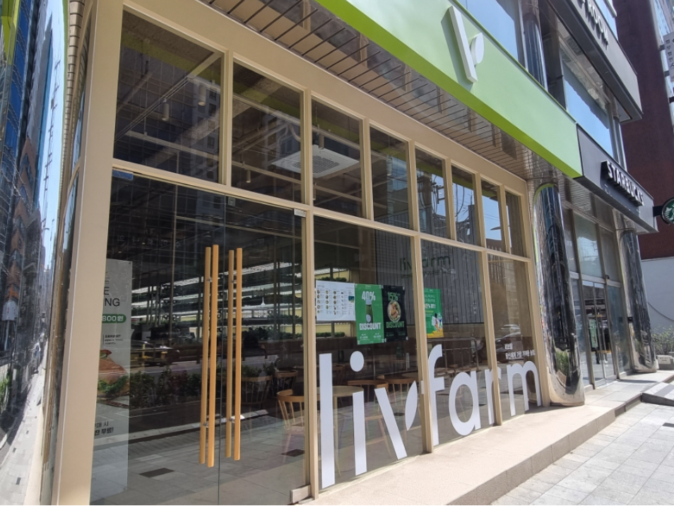

교대역 13번 출구에서 만나보실 수 있는 우리 스마트팜 기반 샐러드 가게는 건강한 라이프스타일을 추구하는 고객들에게 최상의 경험을 선사합니다. 따뜻한 베이지색 톤의 인테리어와 매장 안에서 직접 자라는 신선한 녹색 채소들이 편안한 분위기를 조성해, 건강한 한끼를 즐기기에 이상적인 공간입니다.
세계적인 디자인상을 수상한 MOOTAA 팀의 세련된 디자인 덕분에, 이 매장은 독특한 매력을 자랑합니다. 혁신적인 스마트팜 기술로 재배한 다양한 영양소를 고루 갖춘 맛있는 샐러드로, 고객들의 건강한 식사를 책임지며 뛰어난 서비스와 포근한 분위기를 제공합니다.
교대역 13번 출구에서 지금 바로 찾아보세요! 우리 스마트팜 기반 샐러드 가게에서 건강한 미래를 경험하실 수 있습니다. 최신 스마트팜 기술과 세계적인 디자인이 결합된 이곳에서 신선한 샐러드와 함께 힐링의 시간을 보내실 수 있습니다.
